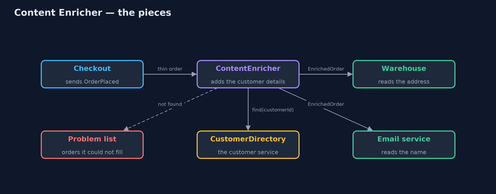
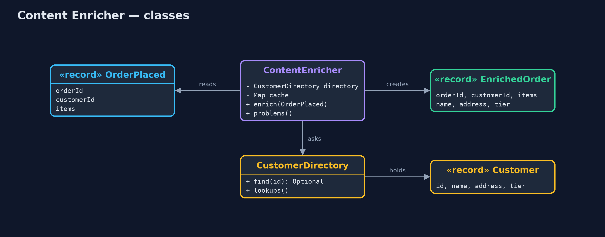
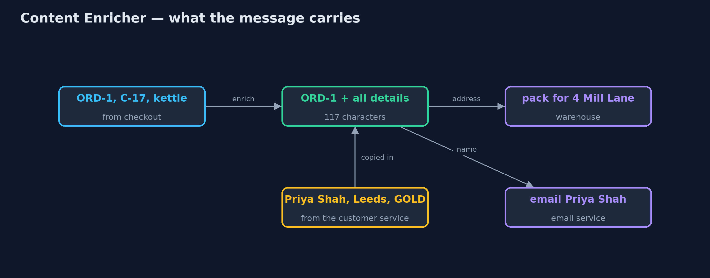
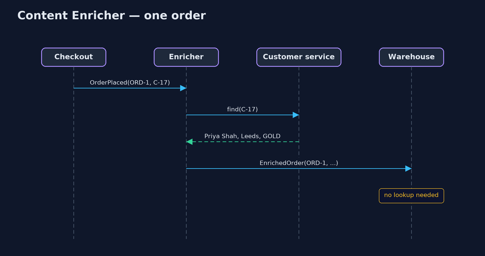

Content Enricher Pattern
src/main/java/com/jk/explore/contentenricher/
├── ContentEnricher.java The pattern: takes each thin order, adds the customer's details once, and passes the full message on
├── ContentEnricherDemo.java The five acts: the thin message, every receiver looking it up, the enricher, a missing customer, and the bill
├── Customer.java What the customer service knows about a customer: name, delivery address and loyalty tier
├── CustomerDirectory.java The customer service, in memory: counts every lookup, and can be switched off to show an outage
├── EnrichedOrder.java The same order with the customer's details added, so no receiver has to look them up
├── OrderPlaced.java The thin message checkout sends: which order, which customer id, and the items
└── Receivers.java The two services that receive orders: the warehouse packs them and the email service confirms themWhen a message is too thin for its receivers, add the missing details once, in the middle, instead of making every receiver look them up.
Content Enricher is one of the Enterprise Integration Patterns, the catalogue of messaging patterns by Gregor Hohpe and Bobby Woolf. A message arrives with only part of what its receivers need, often just an identifier. The enricher sits between the sender and the receivers. It looks the missing details up once, adds them to the message, and passes the fuller message on.
The receivers then have everything in the message itself. They make no calls of their own, and they keep working when the service that holds the details is down.
The idea in everyday terms
Think of a post office sorting room. A letter arrives addressed only to "the Shah family, Mill Lane". A clerk looks up the house number and the postcode in the directory, writes them on the envelope, and sends it on. The postman who delivers it does not need the directory at all.
Without the clerk, every postman on every round would carry a directory and look up every letter themselves.
The scenario
When a customer pays, checkout sends an "order placed" message that holds the order number, the items and a customer identifier, and nothing else. The warehouse needs the delivery address. The email service needs the customer's name. Each of them was calling the customer service for every order, and when that service went down, parcels stopped being packed.
Run
./gradlew runThe demo tells the story in 5 acts, each printing exact numbers that the tests check:
| Act | What it shows |
|---|---|
| 1. The thin message | Checkout sends ORD-1 with customer C-17 and a kettle: no name, no address, no loyalty tier. |
| 2. Every receiver looks it up | 3 orders and 2 receivers make 6 calls to the customer service; when it goes down, packing stops. |
| 3. The enricher | One enricher adds name, address and tier; with a cache, 3 orders need 2 calls; receivers work while the service is down. |
| 4. A customer who cannot be found | ORD-4 names customer C-99, who does not exist; it goes to the problem list instead of travelling on half-filled. |
| 5. The bill | Priya moves house after her order was enriched; the message still says 4 Mill Lane. Every message is bigger for every receiver. |
Test
./gradlew test11 tests in ContentEnricherTest, DemoRunsTest. Every number the demo prints is asserted, and nothing depends on the clock, so every run gives the same result.
Technologies and versions
| Technology | Version | Used for |
|---|---|---|
| Java | 21 | the code (toolchain set in build.gradle) |
| Gradle | 9.2.1 (wrapper) | build and run, nothing to install |
| JUnit | 5.10.2 | the tests |
| videokit | repository tool | the narrated video and animation: Piper en_US-amy-medium, speed 0.8, longer pauses (the approved amy-slow voice) |
Learning Material
| Document | What it is for |
|---|---|
| Problem statement | the situation and what the project must show |
| Prerequisites | what you need to know first |
| Content Enricher, explained | the acts in prose |
| Session guide | a one-hour lesson with exercises |
| Animated walkthrough | the acts step by step, narrated |
| Spec | what this project must be true of |
The pattern in one picture
The enricher is the only part that talks to the customer service. The receivers read the message.

Where each piece sits
Two records for the two messages, one class that turns the first into the second.

How the data moves
The message starts with an identifier and leaves with the details the receivers need.

Who calls whom, in order
One lookup, in the middle; the receivers only read.

Video
video/content-enricher-pattern-explained.mp4 (with .m4a audio and .srt subtitles) is built by video/build_video.sh. Rendered media is not committed.
What it costs
- Bigger messages. Every receiver gets the added details, whether it needs them or not.
- A copy, not the truth. The details are taken at one moment. If the customer moves house a minute later, the message still carries the old address.
- One more step that can fail. The enricher depends on the customer service, so it needs a plan for customers it cannot find.
- Personal data travels further. Names and addresses now sit in every copy of the message, which matters for privacy rules.
When this is too much
When only one receiver needs the extra details, let that receiver look them up. And when the details change often and must be current, such as stock levels or prices, a receiver should ask the owning service at the moment it acts, instead of trusting a copy made earlier.
Where you have already met this
- Apache Camel's
enrichandpollEnrich, and Spring Integration's<int:enricher>. - Kafka Streams joining a stream of orders with a table of customers.
- An API gateway adding a user's details to a request after checking their login token.
- Log shippers that add the host name and region to every log line.
Where this sits
This project is in messaging-integration-patterns, next to Content-Based Router, which decides where a message goes, and Splitter and Aggregator, which change how many messages there are. The enricher changes what one message carries.